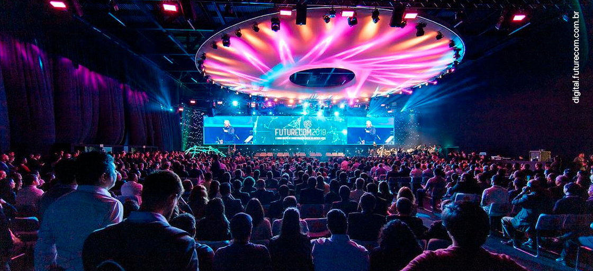

Evento de tecnologia na Uniube

A Uniube promoverá um evento de tecnologia reunindo estudantes, professores e profissionais da área para discutir tendências, inovação e o impacto das novas ferramentas no mercado de trabalho.
O encontro tem como objetivo aproximar os alunos das transformações tecnológicas atuais, oferecendo palestras, apresentações e troca de experiências com convidados que atuam diretamente no setor.
Além de ampliar o conhecimento, o evento também representa uma oportunidade para networking e contato com temas relevantes para a formação acadêmica e profissional dos estudantes.
A expectativa é que a programação incentive o interesse pela inovação e contribua para a preparação dos alunos diante das exigências do mercado contemporâneo.